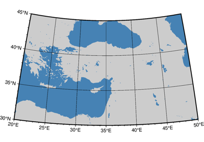

Projections
PyGMT supports many map projections; see GMT Map Projections for an overview.
Use the projection parameter to specify which one you want to use in all plotting
methods. The projection is specified by a one-letter code along with (sometimes optional)
reference longitude and latitude and the width of the map (for example,
Alon0/lat0[/horizon]/width). The map height is determined based on the
region and projection.
These are all the available projections:
Azimuthal Projections


Conic Projections


Cylindric Projections



Transverse Mercator projection
Transverse Mercator projection
Miscellaneous Projections


Non-geographic Projections

Cartesian logarithmic